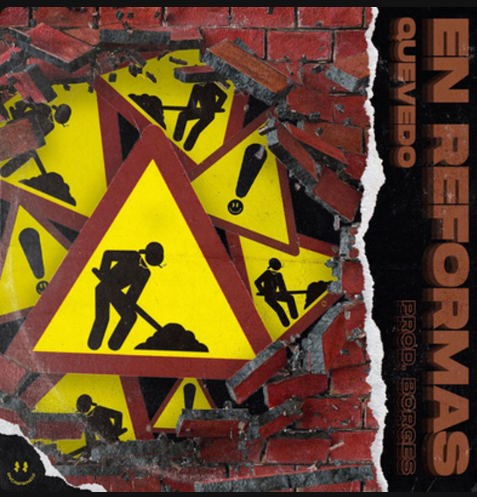
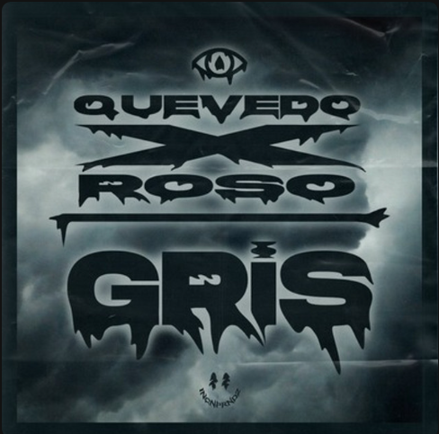
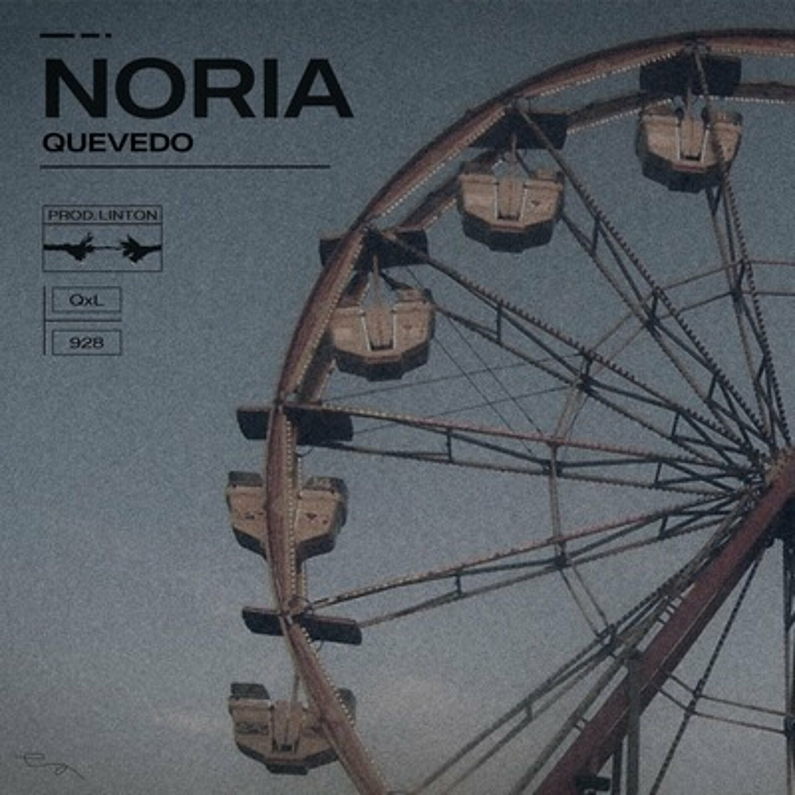
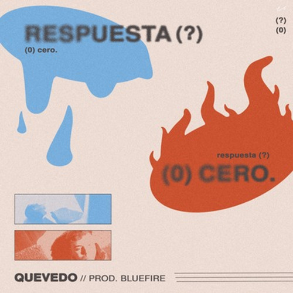

En esta página, vamos vas a poder encontrar los dos últimos album de Pedro Luis Domínguez Quevedo, más conocido como Quevedo.
Haremos también mención a alguna canción importante de su carrera, para destacar aquellas importantes.
DONDE QUIERO ESTAR
Donde quiero estar es el primer álbum de Quevedo, una colección de 16 pistas entre las que se incluye como avance Playa del inglés con Myke Towers. Como invitados además Ovy on the drums, Omar Montes, JC Reyes y Cruz Cafuné.
Quevedo comentó sobre el trabajo y el título: "Lo que trato de mostrar con este disco es la manera en la que busco y encuentro dónde quiero estar, tanto desde el sentido geográfico como desde el sentido de mi carrera. Es complicado saber donde estar cuando todo va tan rápido y no te da tiempo a parar y planteártelo". Añadió: "Algo que tengo claro es que quiero estar en mi isla, con los míos, los que están ahora y han estado siempre. es mi casa, donde me siento yo y donde no me falta nada". Además: "Me preguntaba si el nombre que quería darle al disco (que fue lo último) iba a ser una pregunta o una afirmación. al final, he conseguido tenerlo claro y saber lo que quiero y sobre todo saber sin duda alguna, DONDE QUIERO ESTAR".
Fecha de publicación del disco: 20 de enero de 2023
Título
Autor/es
Duración
1
INTRO: Speech Cruzzi
Cruzz Cafuné
1:01
2
Ahora Qué
Quevedo
2:51
3
Yankee
Quevedo
3:14
4
Vista al mar
Quevedo
3:01
5
Playa del Inglés
Quevedo, Myke Towers
3:58
6
Sin Señal
Quevedo, Ovy on the Drumps
3:05
7
Dame
Quevedo, Omar Montes
3:51
8
Cuéntale
Quevedo
3:18
9
Luces Azules
Quevedo
2:41
10
Punto G
Quevedo
2:31
11
Mueñeca
Quevedo, JC Reyes
3:31
12
Wanda
Quevedo
2:41
13
Me Falta Algo
Quevedo
3:13
14
Lisboa
Quevedo
2:31
15
Éramos dos
Quevedo
2:54
16
Donde Quiero Estar
Quevedo
3:20
BUENAS NOCHES
El segundo album de Quevedo, llamado Buenas Noches, anuncia su vuelta a la musica tras 9 meses de inactividad.
Donde encontramos colaboraciones como: Aitana, Pitbull, Yung Beef, La Pantera y Sin Nombre... Estos fueron algunos de los feats.
A las colaboraciones ya citadas se unen las de Rels B, en la canción titulada Los Días Contados, De La Rose y De La Ghetto en Amaneció y Sech en Te Fallé.
El cantate dio la noticia cuando el reloj marcó la medianoche de este jueves a través de un directo en Instagram que duró apenas cinco minutos y en el que solamente dijo: "Mañana por la noche sale el disco. Buenas noches".
Fecha de lanzamiento de Buenas Noches: 22 de novembre del 2024
Título
Autor/es
Duración
1
Kassandra
Quevedo
3:03
2
Duro
Quevedo
2:42
3
Iguales
Quevedo
3:03
4
Gran Vía
Quevedo, Aitana
2:51
5
Chapiadora.com
Quevedo
3:17
6
Por detrás
Quevedo
2:51
7
14 Febreros
Quevedo, Sin nombre
2:52
8
La 125
Quevedo, Yung beef
3:14
9
HALO
Quevedo, La pantera
3:01
10
Mr.Moondial
Quevedo, Pitbull
2:45
11
Que asco de todo
Quevedo
3:10
12
Noemú
Quevedo
3:26
13
Shibatto
Quevedo
2:18
14
Los días contados
Quevedo, Rels B
2:41
15
El estribillo
Quevedo
2:41
16
Amaneció
Quevedo, De la Rose, De la Ghetto
4:15
17
Te Fallé
Quevedo, Sech
3:39
18
Buenas Noches
Quevedo
3:58
MENCIONES ESPECIALES
Quevedo, empezó con canciones que ya destacaban y reflejaban su estilo, personal y la forma de expresar las cosas que el sentie y como nos lo hace llegar como si fuese alguien que vive una vida normal, sin apadatarse a la fama y manteniendose fiel y como el siempre ha sido.
Antes de ser cantante, Pedro, trabajo en la obra, incluso de cajeros, los cuales lo refleja en alguna de sus canciones, incluso lo menciona.
Estas canciones que mencionamos, son algunas de estas, que no estan juntadas como tal en un album, pero tienen una esencia parecida.
Imagen
Título
Autor/es
Duración

En Reformas
Quevedo
2:49

Gris
Quevedo
3:07
No Me digas Nada
Quevedo
2:28
Némesis
Quevedo
2:41
No me olvido
Quevedo, Juseph
3:17
Universitaria
Quevedo
2:13
Cayó La Noche
Quevedo, La Pantera, Juseph
3:35

Noria
Quevedo
2:53
La Nena
Quevedo, Juseph
3:25
Rimmel
Quevedo
3:00
NANA
Quevedo
2:37
Ahora y Siempre
Quevedo
2:29

Respuesta Cero
Quevedo
3:23
Piel de cordero
Quevedo, La Pantera
3:33
Como esta última canción a nivel persona es muy importante, he decidido hacer con ella el ejemplo de adjuntar el audio de la canción.